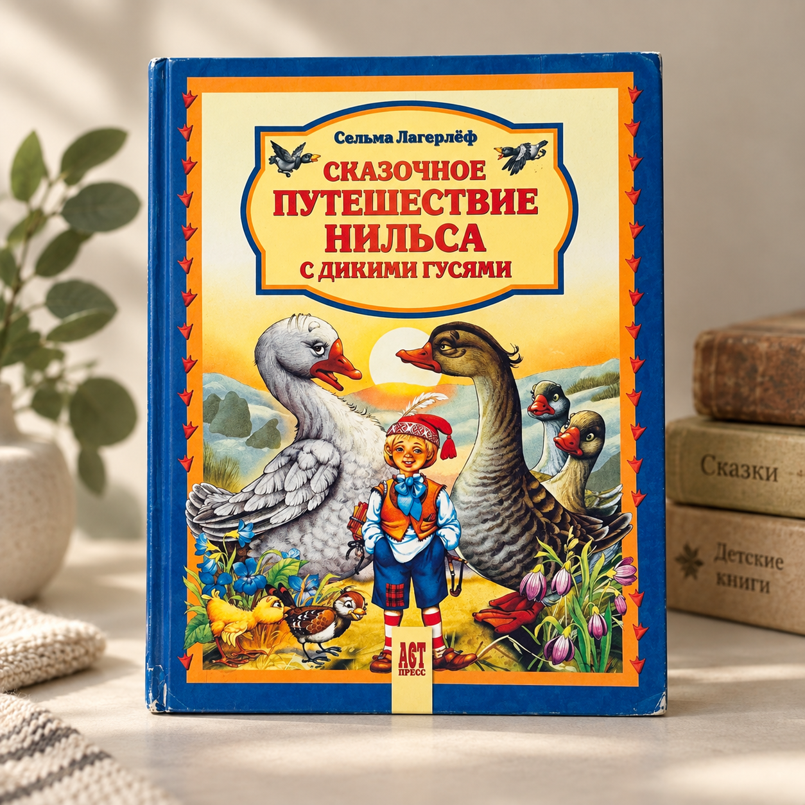
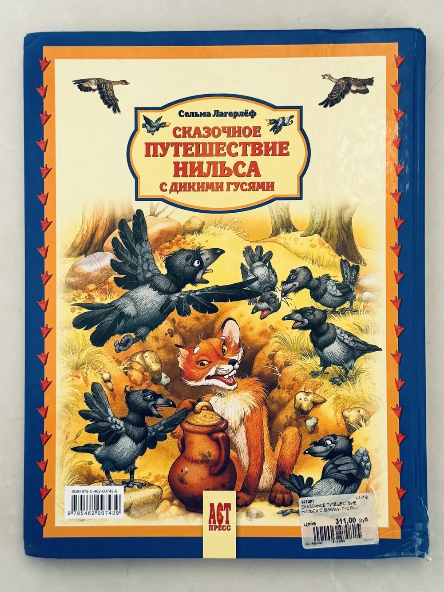

BOOK 003 · ОДИН ЭКЗЕМПЛЯР

♡ любимая книжка, которая ищет нового читателя
Сказочное путешествие Нильса с дикими гусями
Иллюстрации Е. Алмазовой и В. Шварова
€8
1 экземпляр
5–8 летна русскомтвёрдая обложка
▶
Послушать, как всё начинаетсяпервая страница вслух
Об издании
ISBN978-5-462-00743-9
Страниц150
ИздательствоАСТ-Пресс
Год2008
Серия «Читаем малышам», пересказ М. Тарловского. По ISBN можно найти именно это издание в интернете.
Полистай · послушай, как всё начинается · хочешь узнать, что дальше — забери себе.
истории от ребёнка к ребёнкуПолистай
Крупный формат, много цвета и страницы для совместного чтения
Почему именно эта
Классическое путешествие, рассказанное очень наглядно
История Нильса здесь живёт не только в тексте: почти на каждом развороте появляется большой цветной мир — леса, животные, гуси и само путешествие. Это издание особенно хорошо работает для чтения вслух, когда ребёнок ещё не готов осилить длинную книгу самостоятельно.
Что ты увидишь внутри
150 страниц и очень много иллюстраций
Крупный твёрдый формат, плотный текст удобного размера и большие цветные рисунки — часто на половину или целую страницу. Это пересказ М. Тарловского, поэтому по ISBN легко проверить именно эту версию.
Послушай, как всё начинается
Первая страница вслух — чтобы почувствовать язык и ритм
Загляни внутрь
Все фото — именно этого экземпляра
Состояние этого экземпляра
Хорошее
следы использования показаны на фото
- внутренние страницы чистые
- без рисунков и пометок
- есть незначительные потёртости по краям и уголкам обложки
- край корешка внизу изношен подклеен прозрачным скотчем
- на задней обложке сохранилась магазинная наклейка

нажми, чтобы рассмотреть состояниеДетали состояния
История идёт дальше
Книга, которую уже читали, любили — и теперь передают следующему читателю.
BOOK 003 · ОДИН ЭКЗЕМПЛЯР
Забрать эту историю себе
«Сказочное путешествие Нильса с дикими гусями» · €8
Самовывоз в Лимассолебесплатно · место и время договоримся после резерва
BOX NOW locker по Кипру · €2выберешь удобный locker на карте при резерве
Книжки для детей на русском языке · Лимассол, Кипр